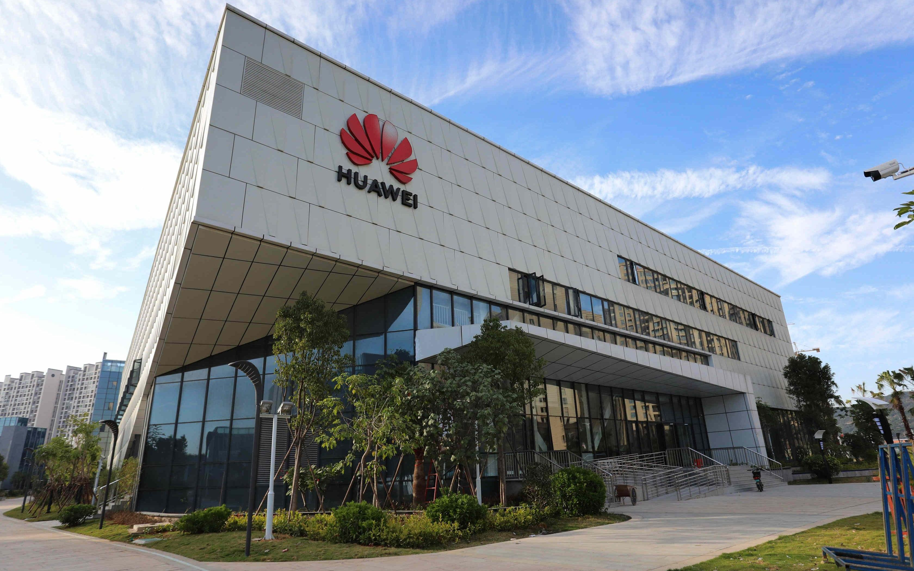
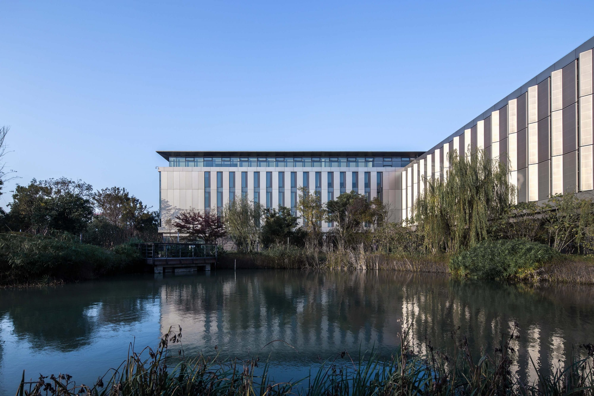

这里是“洛绫珑”的个人网页，也是各种网页功能演示的主站，从这里可以跳转到我写的其他网站。网站于2026年10月30日上线，当时是第30个小版本，也就是0.30版，算是我对HTML、CSS和JavaScript的一次尝试。人总要学点新东西充实自己，虽然现在只是学着玩，但万一以后用得上呢？ 至少开始学这些之后，我打游戏的时间大幅下降，全变成了加功能和修bug的时间。我也很奇怪为什么总想维护这个网页，也许是想到那么多bug要修才有动力😂😂😂？不知道一个小网页怎么能被我修出那么多大大小小的bug，但脑子好像确实变聪明了点，也许？JS的逻辑还是似懂非懂， 不过也算陶冶情操了。刚写完JS，睡一觉起来就只剩编码器认识我的代码了😋😋😋。这里既是个人网页，也是练习场和记录本。页面里的每个按钮、每段文字、每个跳转链接，都像自己慢慢搭起来的小房间，虽然不大，偶尔漏风，但每次补好一个洞，心里就多一分踏实。也许这就是维 护它的意义：不一定非要做出多厉害的东西，而是在一次次修改和尝试里，看着自己从“完全不懂”到“好像懂了一点”，再从“好像懂了一点”到“又能多改一行”。欢迎从这里跳转去看看我写的其他网站，也许下次来，它又多了几个新功能，少了几只旧bug。谁知道呢？反正慢慢来，总会有变化。
——洛绫珑 2026年11月2日
华为的发展史，是一部从代理销售走向技术自立的突围史。1987年，43岁的任正非集资2.1万元在深圳创立华为，最初只是香港交换机的代理商。1990年代，华为转向自主研发，凭借“农村包围城市”策略在通信市场站稳脚跟，1992年推出C&C08数字交换机，为后续扩张奠定技术基础。 2000年后，华为开启全球化征程，从亚非拉新兴市场切入，2005年海外销售额首次超过国内。2012年，华为超越爱立信成为全球最大通信设备商。在消费者业务上，华为从运营商定制机起步，逐步打造Mate、P系列高端机型，跻身全球智能手机第一阵营。 2019年起，面对美国多轮制裁，华为启动“备胎计划”，加速芯片与操作系统自主研发。鸿蒙系统问世，Mate 60系列实现“中国芯”回归。2024年，华为营收达8621亿元，智能汽车解决方案与终端业务成为新增长引擎，问界系列交付量突破百万辆。三十余年间，华为从深圳居民楼里的代理商，成长为全球ICT领域无法忽视的科技巨头。

大面积的纯白金属幕墙搭配通透的玻璃，折角设计极具几何美感，展现前沿科技企业的现代感。
生产基地最大绿化率已达40%遥遥领先于同类园区，生活区山清水透，静水相依。

更新中……